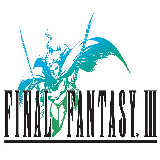
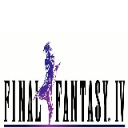
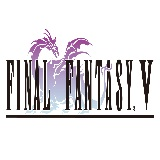

Final Fantasy I & II: Dawn of Souls adalah kompilasi dari dua permainan pertama dalam seri Final Fantasy. Permainan ini dirilis di Jepang di bawah judul Final Fantasy I + II Advance. Secara grafis, permainan ini sangat mirip dengan enhanced remake dari kedua permainan ini di konsol permainan genggam WonderSwan Color. Wikipedia
Readmore

Final Fantasy III adalah permainan role-playing game yang dikembangkan dan diproduksi oleh Square Co., Ltd. pada tahun 1990 untuk Nintendo Family Computer sebagai seri ketiga dari gamenya dan meupakan seri terakhir yang di rilis di Famicom. Wikipedia
Readmore

Final Fantasy IV, sering disingkat menjadi FF4, adalah sebuah permainan role-playing game yang dikembangkan dan diproduksi oleh Square Co., Ltd. pada tahun 1991. Ia dirilis di Amerika Utara dengan nama Final Fantasy II, karena baru merupakan judul kedua dari seri permainan ini yang dipasarkan untuk Amerika Utara. Wikipedia
Readmore

Final Fantasy V adalah sebuah permainan role-playing game yang dikembangkan dan diproduksi oleh Square Co., Ltd. pada tahun 1992 dan awalnya dirilis untuk Nintendo Super Famicom. Wikipedia
Readmore